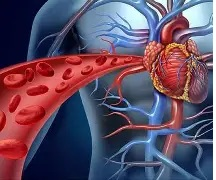
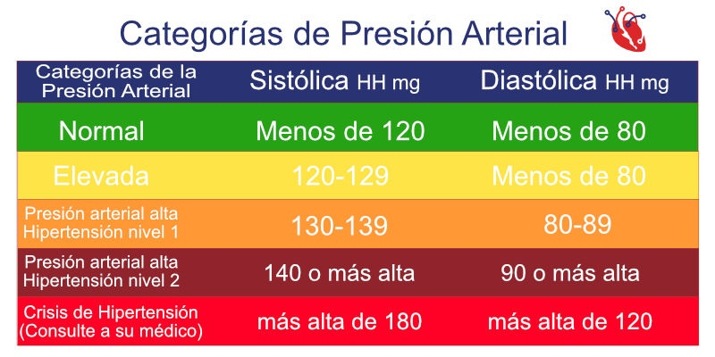

¿QUÉ ES LA PRESIÓN ARTERIAL?
La presión arterial es la fuerza que ejerce la sangre en el interior de las grandes arterias del cuerpo y varía según la elasticidad
de los vasos, su tamaño y la cantidad de sangre bombeada por el corazón. En adultos, la presión arterial sistólica normal varía de 120 a
129 mmHg y la diastólica de 80 a 84 mmHg.
TIPOS DE PRESIÓN ARTERIAL
Presión arterial normal
Cuando los niveles de presión están dentro de un rango saludable como 80-120 en sistolica y 60-80 en diastolica
Presión arterial baja
Cuando la presión es menor de lo normal y puede causar mareos o debilidad como MENOR a 80 en sistolica y MENOR de 60 en diastolica.

Presión arterial alta
Conocida como Hipertensión arterial, ocurre cuando la presión es demasiado alta tal como MAYOR a 140-159 en sistolica grado 1, 160 o SUPERIOR en sistolica y 100 o SUPERIOR Grado 2, por ultimo SUPERIOR a 180 en sistolica y superior a 110 en diastolica en CRISIS HIPERTENSIVA
